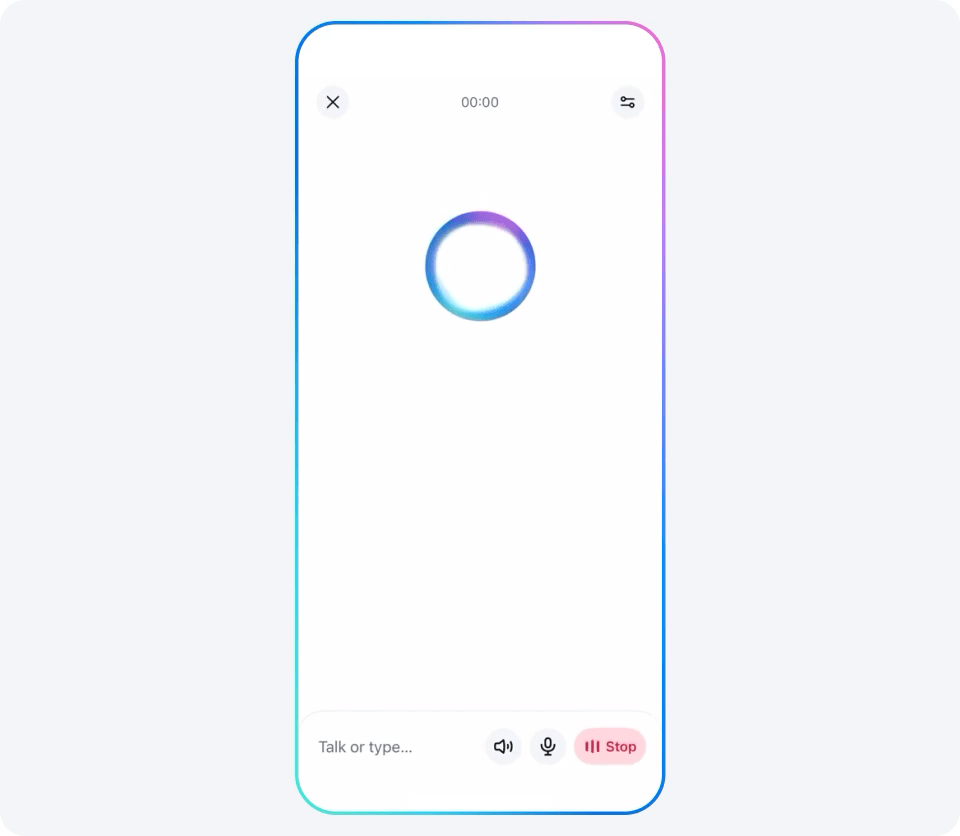

Case study 01
Making AI optimization legible and actionable.
The central design question was not only what the AI could recommend, but how an advertiser would understand the recommendation, evaluate the tradeoff, and decide whether to act.
Public Meta materials now frame the assistant as an embedded advertiser workflow across Ads Manager, Meta Business Suite, and Business Help Center: personalized insights, benchmarks, optimization recommendations, natural-language answers, and account support in the surfaces advertisers already use.
- Product judgment
- Trust was treated as the core interaction model: explain why the system is recommending something, what will change, and how the advertiser stays in control.
- AI relevance
- The work maps directly to AI products where recommendation quality, user confidence, and action design have to move together.
- Platform relevance
- The assistant had to work inside existing advertiser surfaces, backend constraints, support flows, and measurable business outcomes.
- Problem
- AI could identify optimization opportunities, but advertisers needed clarity, confidence, and control before acting.
- Role
- Architected the end-to-end mental model and interaction patterns for AI-driven advertiser guidance.
- Design challenge
- Balance explainability, confidence, actionability, and control without making the product feel heavy or overly technical.
- Process
- Mapped advertiser decisions, recommendation states, backend capability, and cross-functional requirements into a shared product model.
- Solution
- Created recommendation patterns that made the reason, expected value, and next action understandable without exposing unnecessary system complexity.
- Assistant model
- Structured the experience around three advertiser jobs: understand the issue or opportunity, trust the recommendation, and take a clear next step without losing control.
- Trust mechanics
- Defined recommendation states around why a suggestion appeared, what would change, expected value, confidence, user choice, and post-action feedback.
- Public product signals
- Meta describes the assistant as providing personalized insights, performance benchmarks, optimization recommendations, direct account support, campaign analysis, and real-time guidance in natural language. Source
- Public outcomes
- Meta reported beta results showing common account issues resolved at a 20% higher rate, plus a 12% lower cost per result after advertisers applied opportunity-score recommendations. Source Earnings transcript
- Broader AI direction
- Meta's consumer AI assistant announcement emphasizes personalized, contextual, voice-and-text interaction across surfaces, which reinforces the design need for continuity, memory, transparency, and control in business-facing assistants. Meta AI app
- OpenAI relevance
- Directly maps to privacy-preserving, user-first monetization where AI needs to explain itself, preserve user agency, and still produce measurable business outcomes.
